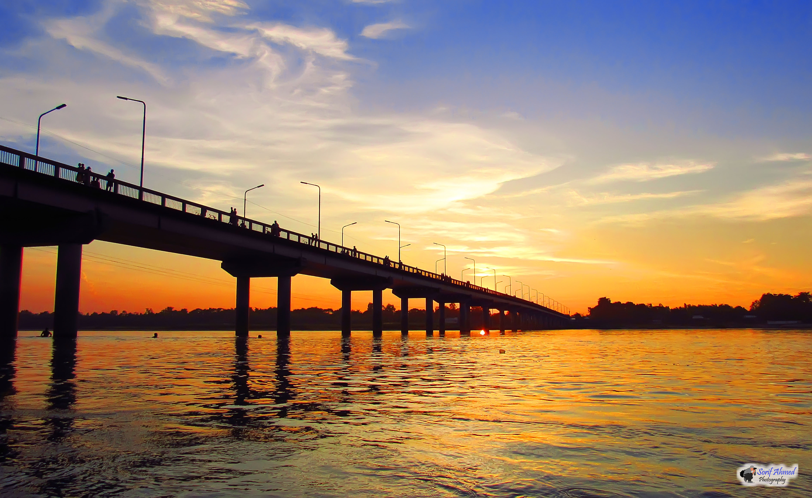
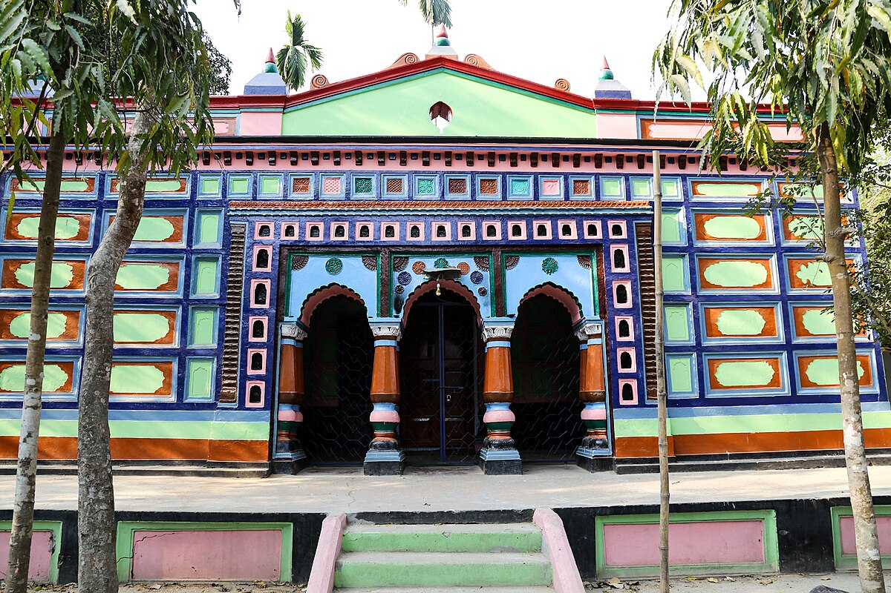
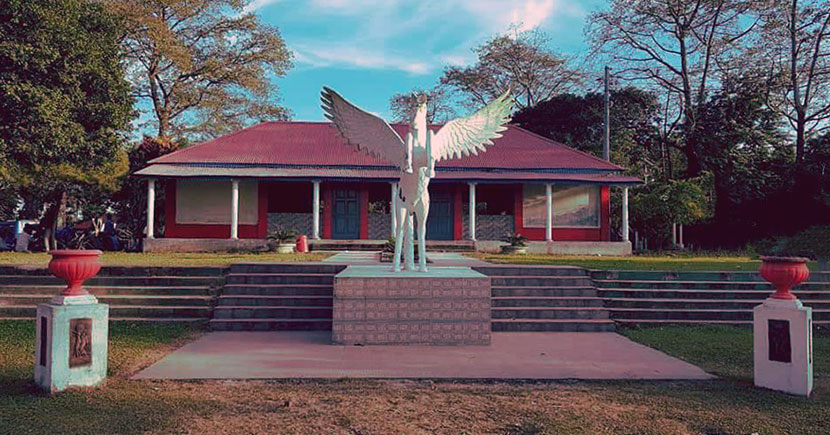
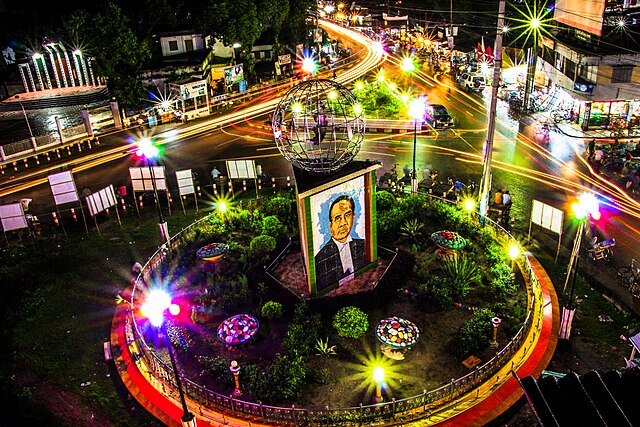

Panchagarh consists of five upazilas.
- Debigonj
- Boda
- Atwari
- Tetulia
- Panchagarh Sadar
DEBIGONJ
Debigonj is bounded by Boda and Panchagarh Sadar upazilas on the north, Birganj, Khansama and Nilphamari Sadar upazilas on the south, Domar upazila and West Bengal state of India on the east, Thakurgaon Sadar and Boda upazilas on the west.

BODA
Boda is the largest upazila in Panchagarh. It is named Boda because a notable temple, known as Bordeshwari Temple is located there. Boda had a population of 168,258. Males constituted 51.22% of the population, and females 48.78%. This upazila's eighteen up population is 83,118. Boda had an average literacy rate of 29.4% (7+ years), and the national average of 32.4% literate.

ATWARI
Atwari upazila is bounded by Chopra CD block in Uttar Dinajpur district, West Bengal, India, on a portion of the north, Boda Upazila on a portion of the north and on the east, Thakurgaon Sadar and Baliadangi upazilas on the south and Islampur CD block in Uttar Dinajpur district, on the west.

TETULIA
Tentulia, is the northernmost region of Bangladesh, constituting an upazila in Panchagarh District of Rangpur Division.[4] Tetulia is geographically the northernmost tip of Bangladesh. Tetulia is notable for its tea. Tetulia is also notable for views of Kangchenjunga, the third highest mountain in the world, from its plains, rivers and tea gardens.

PANCHAGARH SADAR
It is bounded by West Bengal state of India on the north and east, Boda and Debiganj upazilas on the south, Atwari and Tentulia upazilas and West Bengal state of India on the west. The upazila has two enclaves; the Indian enclaves in the upazila are Garati and Singimari.
